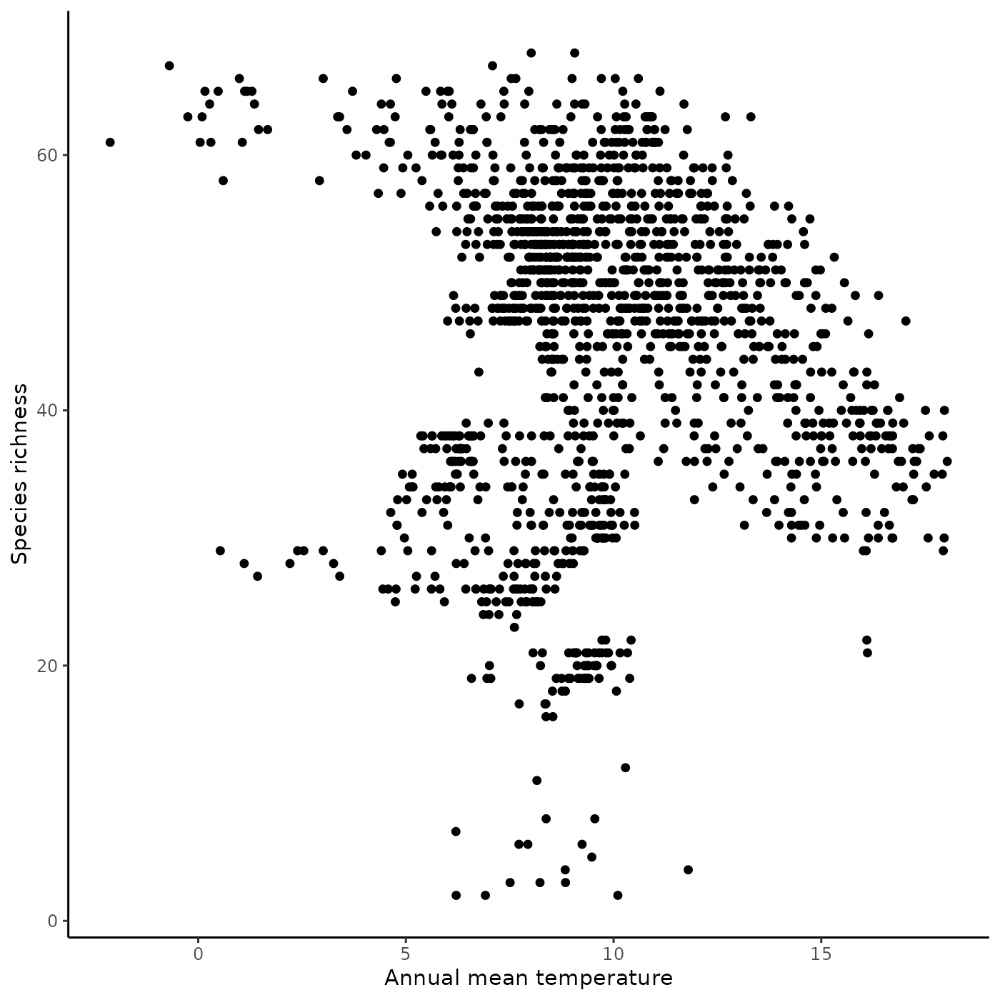
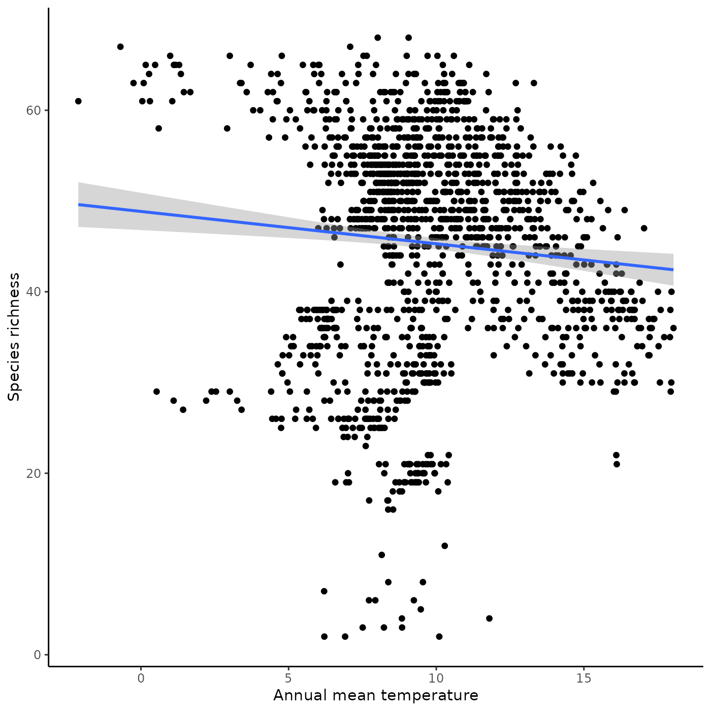

The aim of the funbiogeopackage is to help users with analyses in Functional biogeography (Violle et al. 2014). It helps to load and combine data, computing trait coverage, as well as computing functional diversity indices, drawing maps, correlate them with the environment, and upscaling assemblages.
Initial needed data
The package funbiogeo requires three different datasets to proceed with the analyses:
- the site x locations dataset (example dataset:
site_locations) - the site x species dataset (example dataset:
site_species) - the species x traits dataset (example dataset:
species_traits)
Let’s take a look at each of these datasets.
Site x Locations
This dataset contains spatial coordinates of sites (points) of the study area. It can be either a matrix or a data.frame and row names must contain sites names. It must contain at least two columns: the longitude and the latitude of sites. This dataset must contain unique sites. Additional columns are accepted must will be ignored by funbiogeo.
The package funbiogeo comes with the example dataset site_locations.
## Load site x locations example dataset ----
data("site_locations", package = "funbiogeo")| x | y | |
|---|---|---|
| fb_33 | 5.771820 | 59.59736 |
| fb_35 | 6.771820 | 59.59736 |
| fb_36 | 7.271820 | 59.59736 |
| fb_37 | 7.771820 | 59.59736 |
| fb_38 | 8.271821 | 59.59736 |
| fb_39 | 8.771821 | 59.59736 |
| fb_40 | 9.271821 | 59.59736 |
| fb_41 | 9.771821 | 59.59736 |
| fb_42 | 10.271821 | 59.59736 |
| fb_43 | 10.771821 | 59.59736 |
## Row names contain sites names ----
rownames(site_locations)[1:4]
#> [1] "fb_33" "fb_35" "fb_36" "fb_37"To create your own site x locations dataset you can use the function fb_format_site_locations(). See below the section Long format.
Site x Species
This dataset contains species occurrences/abundance/coverage at sites (points) of the study area. It can be either a matrix or a data.frame and row names must contain sites names. Columns must contain only species distribution information and sites must be unique. No additional columns are accepted.
The package funbiogeo comes with the example dataset site_species.
## Load site x species example dataset ----
data("site_species", package = "funbiogeo")| sp_001 | sp_002 | sp_003 | sp_004 | |
|---|---|---|---|---|
| fb_33 | 1 | 0 | 0 | 0 |
| fb_35 | 1 | 0 | 0 | 0 |
| fb_36 | 1 | 0 | 0 | 0 |
| fb_37 | 1 | 0 | 0 | 0 |
| fb_38 | 1 | 0 | 0 | 0 |
| fb_39 | 1 | 0 | 0 | 0 |
| fb_40 | 1 | 0 | 0 | 0 |
| fb_41 | 1 | 0 | 0 | 0 |
| fb_42 | 1 | 0 | 0 | 0 |
| fb_43 | 1 | 0 | 0 | 0 |
## Row names contain sites names ----
rownames(site_species)[1:4]
#> [1] "fb_33" "fb_35" "fb_36" "fb_37"
## Column names contain species names ----
colnames(site_species)[1:4]
#> [1] "sp_001" "sp_002" "sp_003" "sp_004"To create your own site x species dataset you can use the function fb_format_site_species(). See below the section Long format.
Species x Traits
This dataset contains traits values for studied species. It can be either a matrix or a data.frame and row names must contain species names. Columns must contain only traits variables and species must be unique. No additional columns are accepted.
Note that traits values cannot vary across sites for a given species.
The package funbiogeo comes with the example dataset species_traits.
## Load species x traits example dataset ----
data("species_traits", package = "funbiogeo")| adult_body_mass | gestation_length | litter_size | max_longevity | sexual_maturity_age | diet_breadth | |
|---|---|---|---|---|---|---|
| sp_001 | 461900.76 | 235.00 | 1.25 | 324 | 668.20 | 1 |
| sp_002 | 21.11 | 19.89 | 5.64 | 48 | 76.04 | NA |
| sp_003 | NA | NA | NA | NA | NA | NA |
| sp_004 | NA | NA | NA | NA | NA | NA |
## Row names contain species names ----
rownames(species_traits)[1:4]
#> [1] "sp_001" "sp_002" "sp_003" "sp_004"
## Column names contain traits names ----
colnames(species_traits)
#> [1] "adult_body_mass" "gestation_length" "litter_size"
#> [4] "max_longevity" "sexual_maturity_age" "diet_breadth"To create your own species x traits dataset you can use the function fb_format_species_traits(). See below the section Long format.
Long format
If your data are not spread into three datasets you can use the functions fb_format_*() to create these specific datasets. This implies that your data are structured into a long table, i.e. one row corresponds to the occurrence/abundance/coverage of one species at one site. This also implies that some variables are repeated across the table (e.g. sites coordinates, species traits).
Let’s take an example
## Path to example raw dataset ----
filename <- system.file("extdata", "raw_mammals_data.csv", package = "funbiogeo")
## Read CSV file ----
all_data <- read.csv(filename)| site | longitude | latitude | species | count | adult_body_mass | gestation_length | litter_size | max_longevity | sexual_maturity_age | diet_breadth |
|---|---|---|---|---|---|---|---|---|---|---|
| fb_100 | 5.77182 | 59.09736 | sp_006 | 1 | 21.90 | 23.68 | 5.16 | 52.8 | 57.93 | 4 |
| fb_1000 | 20.27182 | 52.59736 | sp_001 | 1 | 461900.76 | 235.00 | 1.25 | 324.0 | 668.20 | 1 |
| fb_1000 | 20.27182 | 52.59736 | sp_002 | 1 | 21.11 | 19.89 | 5.64 | 48.0 | 76.04 | NA |
| fb_1000 | 20.27182 | 52.59736 | sp_005 | 1 | 31.60 | 24.50 | 4.94 | 48.0 | 43.27 | NA |
| fb_1000 | 20.27182 | 52.59736 | sp_006 | 1 | 21.90 | 23.68 | 5.16 | 52.8 | 57.93 | 4 |
| fb_1000 | 20.27182 | 52.59736 | sp_010 | 1 | 8.31 | NA | 1.73 | 252.0 | NA | 1 |
| fb_1001 | 20.77182 | 52.59736 | sp_001 | 1 | 461900.76 | 235.00 | 1.25 | 324.0 | 668.20 | 1 |
| fb_1001 | 20.77182 | 52.59736 | sp_002 | 1 | 21.11 | 19.89 | 5.64 | 48.0 | 76.04 | NA |
| fb_1001 | 20.77182 | 52.59736 | sp_005 | 1 | 31.60 | 24.50 | 4.94 | 48.0 | 43.27 | NA |
| fb_1001 | 20.77182 | 52.59736 | sp_006 | 1 | 21.90 | 23.68 | 5.16 | 52.8 | 57.93 | 4 |
Formatting site x locations data
The function fb_format_site_locations() extracts sites coordinates from this long table to create the site x locations dataset. Note that one site must have one unique longitude x latitude value.
## Format site x locations data ----
site_locations <- fb_format_site_locations(input_data = all_data,
site = "site",
longitude = "longitude",
latitude = "latitude",
na_rm = FALSE)
## Preview ----
head(site_locations)
#> Simple feature collection with 6 features and 1 field
#> Geometry type: POINT
#> Dimension: XY
#> Bounding box: xmin: 52.09736 ymin: -9.728179 xmax: 59.09736 ymax: 21.27182
#> CRS: EPSG:4326
#> site geometry
#> 1 fb_100 POINT (59.09736 5.771821)
#> 2 fb_1000 POINT (52.59736 20.27182)
#> 7 fb_1001 POINT (52.59736 20.77182)
#> 12 fb_1002 POINT (52.59736 21.27182)
#> 17 fb_1007 POINT (52.09736 -9.728179)
#> 18 fb_1008 POINT (52.09736 -9.228179)Formatting site x species data
The function fb_format_site_species() extracts species occurrence/abundance/coverage from this long table to create the site x species dataset. Note that one species must have been observed one time at one site (the package funbiogeo does not yet consider temporal survey).
## Format site x species data ----
site_species <- fb_format_site_species(data = all_data,
site = "site",
species = "species",
value = "count",
na_to_zero = TRUE)
## Preview ----
head(site_species)
#> sp_006 sp_001 sp_002 sp_005 sp_010 sp_007 sp_008 sp_003 sp_004 sp_009
#> fb_100 1 0 0 0 0 0 0 0 0 0
#> fb_1000 1 1 1 1 1 0 0 0 0 0
#> fb_1001 1 1 1 1 1 0 0 0 0 0
#> fb_1002 1 1 1 1 1 0 0 0 0 0
#> fb_1007 1 0 0 0 0 0 0 0 0 0
#> fb_1008 1 0 0 0 0 0 0 0 0 0Formatting species x traits data
The function fb_format_species_traits() extracts species traits values from this long table to create the species x traits dataset. Note that one species must have one unique trait value (no trait variation across sites allowed).
## Format species x traits data ----
species_traits <- fb_format_species_traits(data = all_data,
species = "species",
traits = c("adult_body_mass", "gestation_length",
"litter_size", "max_longevity",
"sexual_maturity_age", "diet_breadth"))
## Preview ----
species_traits
#> adult_body_mass gestation_length litter_size max_longevity
#> sp_001 461900.76 235.00 1.25 324.0
#> sp_002 21.11 19.89 5.64 48.0
#> sp_003 NA NA NA NA
#> sp_004 NA NA NA NA
#> sp_005 31.60 24.50 4.94 48.0
#> sp_006 21.90 23.68 5.16 52.8
#> sp_007 18.26 NA 5.72 NA
#> sp_008 NA NA NA NA
#> sp_009 903.98 39.25 2.50 84.0
#> sp_010 8.31 NA 1.73 252.0
#> sexual_maturity_age diet_breadth
#> sp_001 668.20 1
#> sp_002 76.04 NA
#> sp_003 NA NA
#> sp_004 NA NA
#> sp_005 43.27 NA
#> sp_006 57.93 4
#> sp_007 NA NA
#> sp_008 NA NA
#> sp_009 NA 3
#> sp_010 NA 1Computing Trait Coverages
a.k.a, how well are sites covered given the trait data I have?
data("site_species", package = "funbiogeo")
data("site_locations", package = "funbiogeo")
data("species_traits", package = "funbiogeo")[…]
Compute trait coverage
[…]
## Get trait coverage ----
cover <- fb_get_coverage(site_species, species_traits)
## Preview ----
head(cover)
#> site trait_coverage
#> 1 fb_33 1
#> 2 fb_35 1
#> 3 fb_36 1
#> 4 fb_37 1
#> 5 fb_38 1
#> 6 fb_39 1[…]
Filter sites by trait coverage
[…]
## Get trait coverage ----
sel_sites <- fb_filter_coverage(site_species, species_traits, coverage_threshold = 1)
## Preview ----
head(sel_sites[ , 1:4])
#> sp_001 sp_002 sp_003 sp_004
#> fb_33 1 0 0 0
#> fb_35 1 0 0 0
#> fb_36 1 0 0 0
#> fb_37 1 0 0 0
#> fb_38 1 0 0 0
#> fb_39 1 0 0 0Diversity metrics
[…]
Species Richness
## Compute species richness ----
richness <- apply(site_species, 1, function(x) sum(ifelse(x > 0, 1, 0)))
## Convert to data frame ----
richness <- data.frame("n_species" = richness)
rownames(richness) <- rownames(site_species)
## Preview ----
head(richness)
#> n_species
#> fb_33 26
#> fb_35 29
#> fb_36 29
#> fb_37 29
#> fb_38 28
#> fb_39 29Community-Weighted Means
[…]
data("site_locations")
data("site_species")
data("species_traits")
## Compute CWM ----
cwm <- fb_cwm(site_species, species_traits)
## Preview ----
head(cwm)
#> site trait cwm
#> 1 fb_33 adult_body_mass NA
#> 2 fb_33 gestation_length NA
#> 3 fb_33 litter_size NA
#> 4 fb_33 max_longevity NA
#> 5 fb_33 sexual_maturity_age NA
#> 6 fb_33 diet_breadth NARelation with environment
[…]
## Available climate rasters ----
prec <- system.file("extdata", "annual_tot_prec.tif", package = "funbiogeo")
tavg <- system.file("extdata", "annual_mean_temp.tif", package = "funbiogeo")
## Import climate rasters ----
layers <- terra::rast(c(tavg, prec))
## Preview ----
layers
#> class : SpatRaster
#> dimensions : 290, 405, 2 (nrow, ncol, nlyr)
#> resolution : 0.08333333, 0.08333333 (x, y)
#> extent : -10.5, 23.25, 35.83333, 60 (xmin, xmax, ymin, ymax)
#> coord. ref. : lon/lat WGS 84 (EPSG:4326)
#> sources : annual_mean_temp.tif
#> annual_tot_prec.tif
#> names : annual_mean_temp, annual_tot_prec
#> min values : -5.921834, 123.000000
#> max values : 19.84375, 3064.00000[…]
site_locations <- site_locations[!duplicated(site_locations),]
site_locations[["site"]] <- rownames(site_locations)
rownames(site_locations) <- NULL
site_locations <- sf::st_as_sf(site_locations, coords = 1:2, crs = 4326)
## Extract environment at sites ----
sites_env <- fb_get_environment(site_locations, layers)
## Preview ----
head(sites_env)
#> site annual_mean_temp annual_tot_prec
#> 1 fb_33 6.6840000 2620
#> 2 fb_35 4.4082499 1818
#> 3 fb_36 0.5312084 1324
#> 4 fb_37 2.5419166 881
#> 5 fb_38 2.2083750 971
#> 6 fb_39 3.0096667 939[…]
## Append information ----
rich_env <- merge(richness, sites_env, by.x = "row.names", by.y = "site")
## Preview ----
head(rich_env)
#> Row.names n_species annual_mean_temp annual_tot_prec
#> 1 fb_100 3 7.508624 1543
#> 2 fb_1000 50 7.729875 512
#> 3 fb_1001 49 7.604333 483
#> 4 fb_1002 49 7.747334 470
#> 5 fb_1007 22 10.422542 1750
#> 6 fb_1008 21 9.545042 1274
biplot <- ggplot(rich_env, aes(x = annual_mean_temp, y = n_species)) +
geom_point() +
theme_classic() +
labs(x = "Annual mean temperature", y = "Species richness")
biplot
biplot + geom_smooth(method = "lm")
#> `geom_smooth()` using formula 'y ~ x'
Visualization
Map of environment
[…]
## Read raster ----
tavg <- system.file("extdata", "annual_mean_temp.tif", package = "funbiogeo")
tavg <- terra::rast(tavg)
## Map of raster ----
fb_map_raster(tavg)
fb_map_raster(tavg) +
scale_fill_distiller("Temperature", palette = "Spectral") +
theme(legend.position = "bottom") +
ggtitle("Mean annual temperature in Pennsylvania")
library("patchwork")
## Read raster ----
tavg <- system.file("extdata", "annual_mean_temp.tif", package = "funbiogeo")
tavg <- terra::rast(tavg)
prec <- system.file("extdata", "annual_tot_prec.tif", package = "funbiogeo")
prec <- terra::rast(prec)
## Individual Maps ----
x <- fb_map_raster(tavg, legend.position = "none") +
scale_fill_distiller("Temperature", palette = "Spectral")
y <- fb_map_raster(prec) +
scale_fill_distiller("Precipitation", direction = 1)
## Arrangement ----
figure <- x / y
figure +
plot_annotation(title = "Pennsylvania",
theme = theme(plot.title = element_text(face = "bold"))) &
theme_classic() &
theme(text = element_text('mono'))
Map of indices
[…]
## Upscale to grid ----
rownames(rich_env) <- rich_env[ , 1]
rich_env <- rich_env[ , "n_species", drop = FALSE]
ras_richness <- fb_aggregate_site_data(site_locations = site_locations,
site_data = rich_env,
agg_grid = tavg)
ras_richness
#> class : SpatRaster
#> dimensions : 290, 405, 1 (nrow, ncol, nlyr)
#> resolution : 0.08333333, 0.08333333 (x, y)
#> extent : -10.5, 23.25, 35.83333, 60 (xmin, xmax, ymin, ymax)
#> coord. ref. : lon/lat WGS 84 (EPSG:4326)
#> source : memory
#> name : n_species
#> min value : 2
#> max value : 68
fb_map_raster(ras_richness)
fb_map_raster(ras_richness) +
scale_fill_distiller("Number of species", palette = "Spectral") +
theme(legend.position = "bottom") +
ggtitle("Trees species richness in Pennsylvania")
References
Violle C, Reich, PB Pacala SW, et al. (2014) The emergence and promise of functional biogeography. Proceedings of the National Academy of Sciences, 111, 13690–13696. DOI: 10.1073/pnas.1415442111